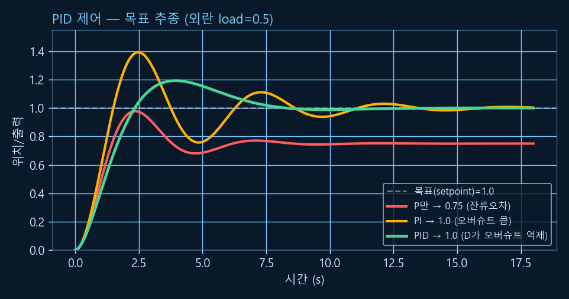
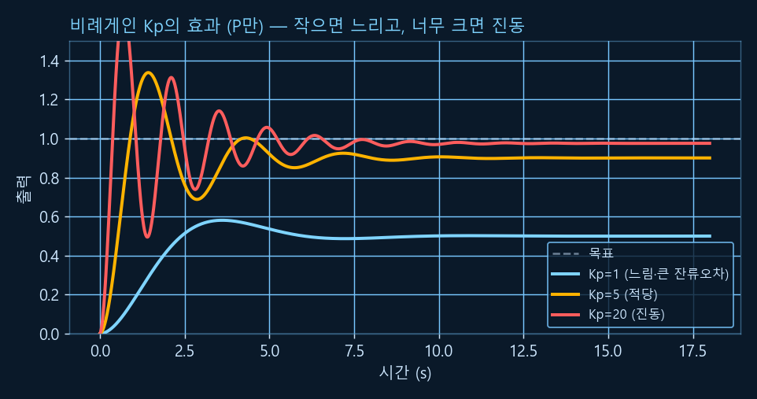

Chapter R5: 제어 이론 기초 (PID)
"목표에 정확히, 빠르게, 흔들림 없이 도달하기" — 이것이 제어(control)입니다. 출력을 되먹이는 폐루프(피드백)의 개념을 잡고, 로보틱스·산업에서 가장 널리 쓰는 PID 제어기의 세 항(P·I·D)이 각각 무슨 일을 하는지 직접 시뮬레이션으로 눈으로 확인합니다. (R0의 미분·적분이 바로 D와 I입니다. 모든 시뮬레이션 코드는 Python으로 실행 검증했습니다.)
1. 개루프 vs 폐루프 — 피드백의 힘
개루프(open-loop) 제어는 "이만큼 하면 되겠지" 하고 명령만 내리고 결과는 안 봅니다(토스터 타이머처럼). 폐루프(closed-loop)는 센서로 결과를 되먹여(피드백) 목표와의 오차를 보고 계속 보정합니다. 외란·오차가 있는 현실에서는 폐루프가 필수입니다.
💡 비유로 이해하기: 샤워 물 온도 맞추기
눈 감고 수도꼭지를 "딱 여기"로 돌리는 게 개루프 — 물이 너무 뜨겁거나 차도 모릅니다. 반면 손으로 물을 만져 보며(센서) 뜨거우면 차게, 차면 뜨겁게 돌리는 게 폐루프입니다. 핵심은 오차(목표 온도 − 지금 온도)를 보고 반응하는 것 — 이 오차를 어떻게 처리하느냐가 PID입니다.
오차를 처리하는 가장 똑똑하고 단순한 방법이 PID입니다 — 오차의 크기(P), 누적(I), 변화율(D)을 적절히 섞어 제어 신호를 만듭니다: u = Kp·e + Ki·∫e dt + Kd·de/dt.
2. 비례 제어 (P) — 오차에 비례해서
가장 직관적인 항입니다 — 오차가 크면 세게, 작으면 약하게 밀어줍니다(Kp·e). 목표에서 멀면 빠르게 다가가죠. 하지만 P만으로는 한계가 있습니다.
⚠️ P만의 한계: 잔류오차(steady-state error)
외란(중력·마찰·부하)이 있으면, 그걸 버티려면 제어 신호 u가 어느 정도 필요합니다. 그런데 u = Kp·e이므로 u가 0이 아니려면 e도 0이 아니어야 합니다. 결국 목표에 살짝 못 미친 채 멈춥니다 — 이 남는 오차가 잔류오차입니다. (Kp를 키우면 줄지만, 너무 키우면 진동합니다.)
3. 적분 제어 (I) — 쌓인 오차를 없앤다
적분(I) 항은 오차를 시간에 따라 누적합니다(Ki·∫e dt — R0의 적분!). 작은 잔류오차라도 계속 쌓이면 적분값이 커져, 결국 외란을 버틸 만큼 제어 신호를 밀어 올립니다. 그 결과 잔류오차가 0이 됩니다.
💡 비유로 이해하기: 끈질긴 협상가
P가 "지금 차이만큼만 요구"하는 사람이라면, I는 "여태 못 받은 걸 다 합쳐서 요구"하는 끈질긴 협상가입니다. 작은 오차도 쌓이면 무시 못 할 압력이 되어 목표를 끝내 달성합니다. 단, 너무 끈질기면(적분 와인드업) 과하게 밀어붙여 큰 오버슈트가 생깁니다.
4. 미분 제어 (D) — 미래를 내다본다
미분(D) 항은 오차의 변화율을 봅니다(Kd·de/dt — R0의 미분!). 오차가 빠르게 줄고 있으면 "곧 목표에 닿겠다"고 예측해 미리 브레이크를 밟습니다. 덕분에 오버슈트와 진동을 억제해 부드럽게 멈춥니다.
💡 비유로 이해하기: 주차할 때 미리 브레이크
주차선에 빠르게 다가가면, 선에 닿기 전에 미리 속도를 줄이죠. D가 그 역할입니다 — "지금 너무 빨리 접근 중"이면 제동을 걸어 지나치지(오버슈트) 않게 합니다. 단, D는 변화율을 보므로 센서 노이즈(R2)에 민감합니다(노이즈의 급변을 큰 변화로 오해). 그래서 실무에선 D를 약하게 쓰거나 필터를 겁니다.
5. PID 한눈에 — P vs PI vs PID 시뮬레이션
이제 세 항을 합쳐 직접 돌려 봅니다. 외란(load)이 있는 간단한 시스템(질량+감쇠)을 목표 1.0으로 보내며, P만 / PI / PID를 비교합니다.
import numpy as np
def simulate(kp, ki, kd, target=1.0, load=0.5, c=1.0, dt=0.01, T=18.0):
p, v = 0.0, 0.0 # 위치, 속도
integral, prev_e = 0.0, target - p # prev_e=초기 오차 (D의 첫 스텝 '미분 킥' 방지)
traj = []
for _ in range(int(T / dt)):
e = target - p # 오차 = 목표 - 현재
integral += e * dt # I: 오차 누적(적분)
deriv = (e - prev_e) / dt # D: 오차 변화율(미분)
u = kp*e + ki*integral + kd*deriv # PID 제어 신호
a = u - c*v - load # 플랜트(질량1): 가속도 = 힘 - 감쇠 - 외란
v += a * dt # 속도·위치를 적분으로 갱신
p += v * dt
prev_e = e
traj.append(p)
return np.array(traj)
for name, (kp, ki, kd) in [("P만", (2, 0, 0)), ("PI", (2, 0.8, 0)), ("PID", (2, 0.8, 1.5))]:
tr = simulate(kp, ki, kd)
print(f"{name:4s}: 최종 {tr[-1]:.3f}, 최대(오버슈트) {tr.max():.3f}")✅ 실행 결과 (검증됨)
P만 : 최종 0.750, 최대(오버슈트) 0.978 PI : 최종 1.003, 최대(오버슈트) 1.393 PID : 최종 1.000, 최대(오버슈트) 1.193

세 줄 요약: P는 빠르게 다가가되 살짝 못 미치고(잔류오차), I가 그 오차를 끝내 0으로, D가 출렁임을 가라앉힌다.
6. 게인 튜닝 — 세 손잡이 맞추기
PID 성능은 세 게인 Kp, Ki, Kd를 어떻게 맞추느냐에 달렸습니다. 각 게인을 키울 때의 대략적 효과를 표로 익혀 두면 감을 잡기 좋습니다.
| 게인 ↑ | 상승 속도 | 오버슈트 | 정착 시간 | 잔류오차 |
|---|---|---|---|---|
| Kp ↑ | 빨라짐 | 증가 | 조금 변화 | 감소 |
| Ki ↑ | 빨라짐 | 증가 | 증가 | 제거 |
| Kd ↑ | 거의 그대로 | 감소 | 개선 | 영향 적음 |

Kp 하나만 봐도 트레이드오프가 보입니다 — 작으면(파랑) 느리고 잔류오차가 크며, 적당하면(주황) 좋고, 너무 크면(빨강) 진동합니다.🔧 지글러-니콜스(Ziegler-Nichols) 튜닝
고전적 자동 튜닝법입니다. Ki·Kd를 0으로 두고 Kp만 키워 시스템이 일정하게 진동하기 시작하는 임계게인 Ku와 그때의 진동 주기 Tu를 찾은 뒤, 표(예: Kp=0.6·Ku, Ki·Kd는 Tu 기반)로 게인을 정합니다. 출발점으로 좋고, 이후 손으로 미세 조정합니다. 실무 팁: "P로 빠르게, I로 정확하게, D로 부드럽게" 순서로 감을 잡으세요.
7. (참고) 상태공간 — 더 큰 그림
PID는 오차 하나만 보지만, 더 복잡한 시스템(여러 상태가 얽힌)은 상태공간(state-space)으로 다룹니다. 시스템을 상태 변수(위치·속도 등)의 벡터 x로 보고, ẋ = A·x + B·u(R1의 행렬!)로 동역학을 적습니다. 위 시뮬레이션의 (위치 p, 속도 v)가 바로 2개짜리 상태입니다.
상태공간은 LQR·칼만 필터(R2의 칼만이 여기로 확장!)·현대 제어의 기반입니다. 지금은 "여러 상태를 행렬로 묶어 한 번에 다룬다"는 감만 잡으면 충분합니다.
8. 한 장 요약
| 항 | 보는 것 | 역할 | 주의 |
|---|---|---|---|
| P (비례) | 지금 오차 | 오차에 비례해 밀기 (빠름) | 잔류오차 남음 |
| I (적분) | 쌓인 오차 | 잔류오차 제거 | 와인드업·오버슈트 |
| D (미분) | 오차 변화율 | 오버슈트·진동 억제 | 노이즈에 민감 |
| 폐루프 | 출력을 되먹여 오차 보정 | 외란에 강함 | |
| 튜닝 | P로 빠르게·I로 정확히·D로 부드럽게 | 지글러-니콜스 출발점 | |
이제 로봇은 감지(R2)·구동(R3)·기구학(R4)·정밀 제어(R5)를 모두 갖췄습니다. 다음 R6(ROS 2)부터는 이 조각들을 실제 로봇 소프트웨어로 묶는 프레임워크를 배웁니다(곧 공개). 💪